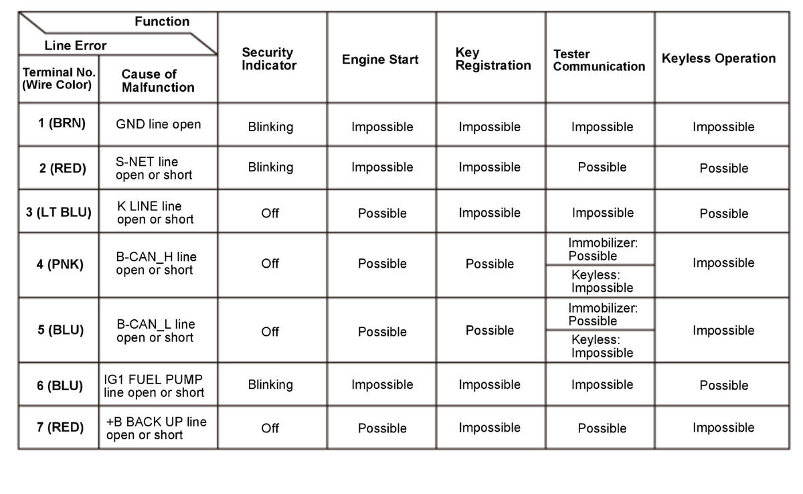

Symptom Troubleshooting Using Malfunctioning Circuit Functions
If a malfunction occurs in the immobilizer circuit, use the table to cross-reference the malfunction criteria to the line(s) that should be checked in the table:
 Courtesy of HONDA, U.S.A., INC.
|